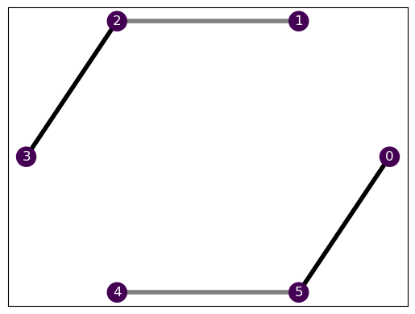
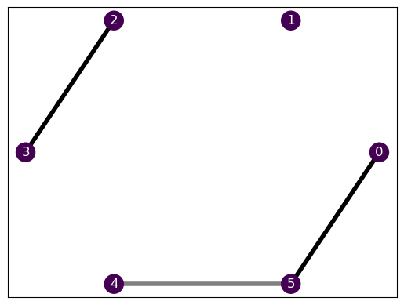
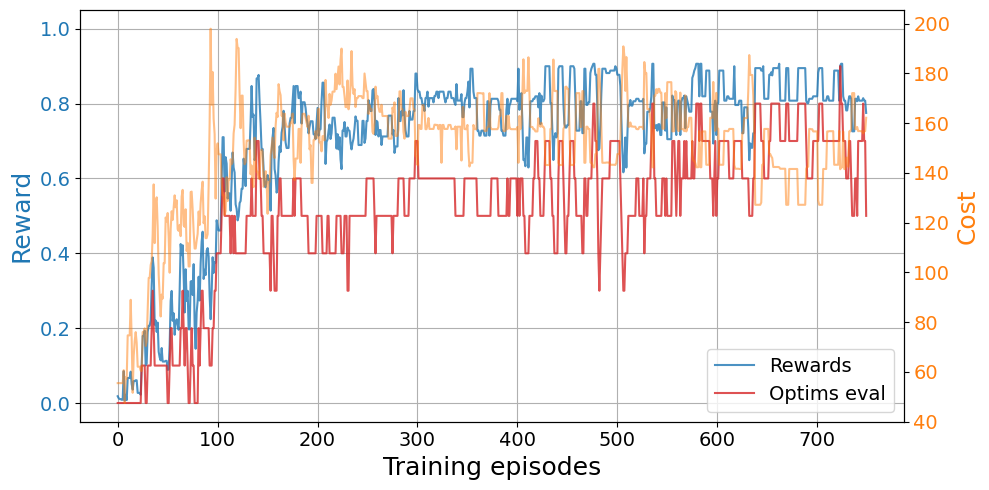
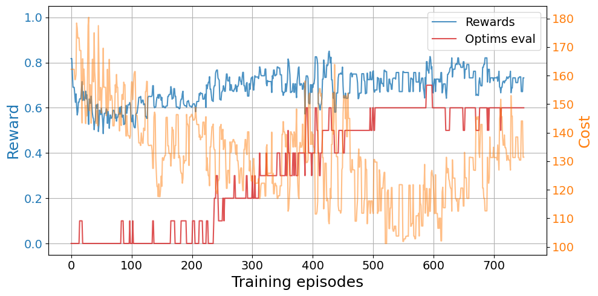
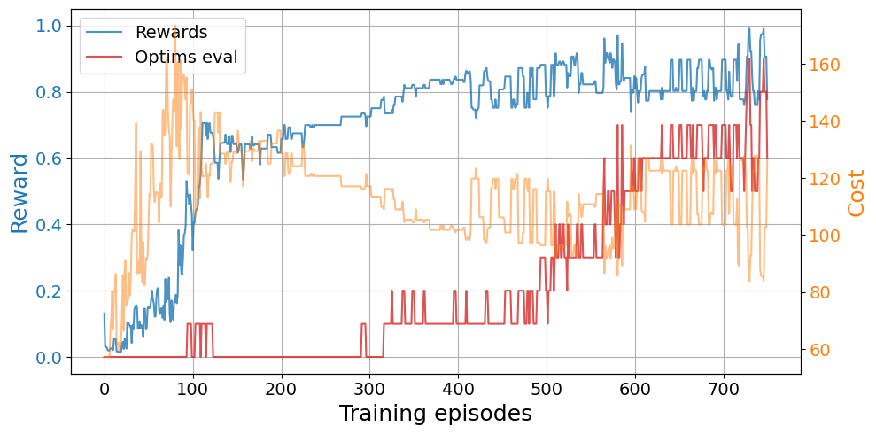
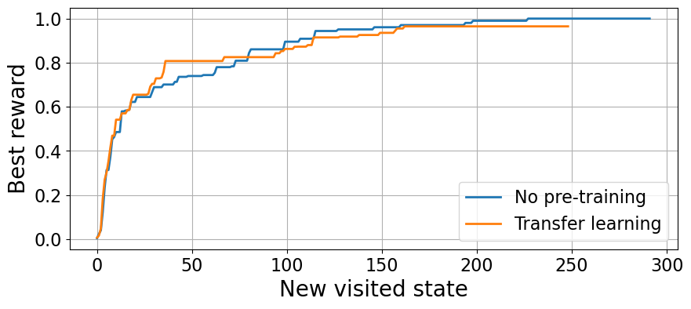
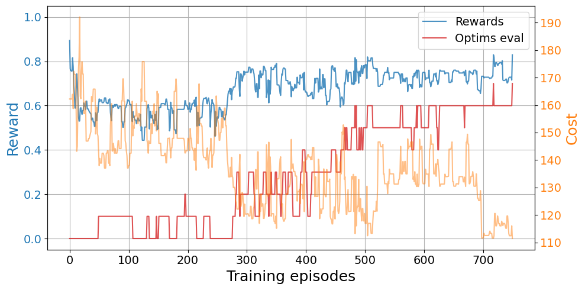
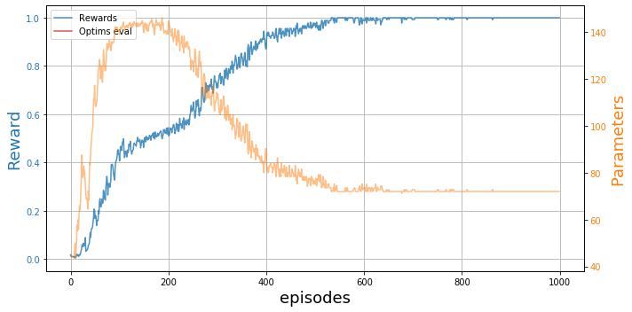
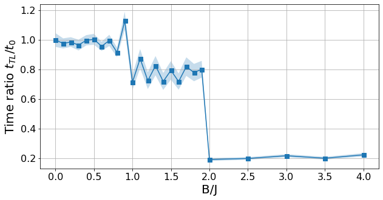

N = 6
chain = Chain1D(N)
# Hamiltonian 1
b, j = 1., [i%3 for i in range(N)]
H1 = XXHamiltonian(chain, b, j)
# Hamiltonian 2
b, j = 1., [0, 0, 2, 0, 1, 2]
H2 = XXHamiltonian(chain, b, j)Transfer learning
This is the third notebook of a series of tutorials to use the BOUNCE library, which we developed for the Certificates of quantum many-body properties assisted by machine learning paper.
In this notebook, we show how to leverage transfer learning to improve our optimization results. Trasfer learning is a machine learning technique with which we use the experience obtained solving a determined problem to speed up the solution of a similar (yet different) problem.
In our case, we start by training an agent to find an optimal relaxation with a given Hamiltonian. Then, we can exploit the knowledge gathered by this agent to solve a similar problem, e.g., finding the optimal relaxation with a perturbation of the original Hamiltonian. In order to do so, instead of restarting the learning process from scratch, we take the trained agent from the first problem as starting point to solve the second problem.
In the first tutorial, we used a DQNTrainer to optimize our relaxations. This class provides two ways to do transfer learning. The most straightfoward method is by, simply, training the agents to solve a problem and, then, change the already existing environment and some of the agent hyper-parameters to solve the second problem. The second approach consists on instancing a new DQNTrainer for the second problem with an agent.model list containing the pre-trained newtorks. We recommend to use this second approach as it has less risk of having data leakages and we will usually save the trained models in the disk anyway.
With transfer learning, we can obtain advantages in three main aspects:
- Jumpstart advantage: at the beginning of the training, the rewards obtained with transfer learning are, on average, higher than the ones obtained without introducing prior knowledge.
- Asymptotic advantage: by the end of the training, on average, more agents reach higher rewards with transfer learning.
- Convergence advantage: with transfer learning, the convergence is much faster.
Transfer learning from scratch
When we do not have any pre-trained models to use for our task at hand, but we want to see how an agent trained in a similar and, maybe, easier problem may be of use for our task, we need to first train these agents.
For this task, we only need one DQNTrainer whose paramters will be changed between tasks.
Problem definition
Here, we will define our two problems characterized by similar Hamiltonians: * The initial Hamiltonian H1. * The second Hamiltonian H2, similar to H1.
Let’s see how they look!
H1.draw()
H2.draw()
They are fairly similar, as they share an entire equal section. If both Hamiltonians had the same ground state, the transfer learning would be completely trivial, provided that the optimal relaxation would be the same. As we show in our work, we can exploit this to explore the phase diagram of the Hamiltonians, but let’s not get ahead of ourselves here! We still need to finish defining our environment.
# Solver
solver = SdPEnergySolver()
# Environment
budget = 300
env1 = SdPEnvironment(H1, solver, budget)
env2 = SdPEnvironment(H2, solver, budget)The agent
Now that we have our problem instances, we can define our agent to figure out the optimal relaxation for the task.
# Agent parameters
learning_rate = 2e-3
batch_size = 200
eps_0 = 1.
eps_decay = 0.995
target_update = 5
# Training parameters
episodes = 750
time_steps = 6
opt1 = (-10.9443, 127)
opt2 = (-10.4721, 83)
best_ref2 = np.array([*opt2, 288])
n_agents, jobs = 10, 10 # Parallel trainings and coresSolve the first problem
Let us define the DQNTrainer and train an agent to find the optimal solution to the first problem.
dqn = DQNTrainer(env1, n_agents=n_agents, n_jobs=jobs,
learning_rate=learning_rate, batch_size=batch_size,
eps_decay=eps_decay, eps_0=eps_0, target_update=target_update)plot_trainings(results1["training"])
Change the problem
To properly do transfer learning, we not only have to change the environment, but we also have to reset some of the agent attributes. For example, we need to reset the episodic memory for replay, and we can choose to change the \(\varepsilon\) for exploration in the \(\varepsilon\)-greedy policy. We can use the methods DQNTrainer.change_environment and DQNTrainer.set_agent_attrs.
dqn.change_environment(problem=H2) # Change environment hamiltonian
dqn.set_agent_attrs(epsilon=0.8*eps_0, memory=deque(maxlen=10000)) # Reset epsilon and memoryplot_trainings(tl_results["training"])
Compare against directly solving the problem
In order to see whether we obtain any kind of advantage with transfer learing, we need to compare the result with respect to a training without any prior knowledge. Therefore, let’s create our second problem and solve it from scratch.
dqn = DQNTrainer(env2, n_agents=n_agents, n_jobs=jobs,
learning_rate=learning_rate, batch_size=batch_size,
eps_decay=eps_decay, eps_0=eps_0, target_update=target_update)plot_trainings(base_results['training'])
In this case, we observe a clear jump-start advantage with transfer learning over a cold start. We also observe that some agents find the optimal relaxation sooner in the exploration with transfer learning and the convergence is faster. However, we do not see an asymptotic advantage.
We can also look at the exploration results of both approaches.
Code
base_expl = base_results['exploration']
base_rewards = arrange_shape(base_expl['oracle_rewards'])
tl_expl = tl_results["exploration"]
tl_rewards = arrange_shape(tl_expl['oracle_rewards'])
plt.figure(figsize=(10, 4))
plt.plot(np.mean(best_so_far(base_rewards), axis=0), linewidth=2, label="No pre-training")
plt.plot(np.mean(best_so_far(tl_rewards), axis=0), linewidth=2, label="Transfer learning")
plt.grid()
plt.legend(fontsize=16)
plt.tick_params(labelsize=16)
plt.xlabel("New visited state", fontsize=20)
plt.ylabel("Best reward", fontsize=20);
In this case, we see an early advantage for the transfer learning agents. Unfortunately, in this example we have found that the second transfer learning agent has got stuck heavily and it hinders their statistics. In order to properly compare both approaches, we need to gather more statistics than what we have in this small example :)
Warning
Just like transfer learning can be beneficial in some cases, it can be completely irrelevant in others. However, it can also be harmful, so be careful!
Transfer learning from saved models
So far, we have seen a rather naive way of doing transfer learning in which we have all the models loaded at all times and we change the problem only once. A better approach, is to load pre-trained models from the disk. This way, we can train a bunch of models to solve a task and, then, we can load them as many times as we want to solve any other potential tasks.
Load the pre-trained models
In this case, we can load the models trained to solve H1. We use the function load_model which outpus a dictionary containing both the acutal pytorch model and the mdoel’s state_dict. The quantities can be accessed with the keys 'model' and 'state_dict'.
pre_trained_models = [load_model(H1, budget, ID)['model'] for ID in range(n_agents)]
print(f'We have loaded {len(pre_trained_models)} models')
print(pre_trained_models[0])We have loaded 10 models
DQN(
(fc1): Linear(in_features=18, out_features=54, bias=True)
(fc2): Linear(in_features=54, out_features=38, bias=True)
(fc3): Linear(in_features=38, out_features=38, bias=True)
(fc4): Linear(in_features=38, out_features=19, bias=True)
)Train the models
Let’s now create the DQNTrainer to solve the second problem H2 with the pre-trained models. Whenever we input a collection of models, n_agents is automatically adjusted but we still need to choose the amount of parallel threads.
dqn_from_models = DQNTrainer(env2, models=pre_trained_models, n_jobs=len(pre_trained_models),
eps_0=0.8)train_results_models = results_from_models['training']
plot_trainings(train_results_models)
Transfer learning across phases
In the Heisenberg XX model we find two phases with very different ground states. Recall tha the model is characterized by the following Hamiltonian:\[H=\sum_{i} J_{i}(\sigma_{i}^x \sigma_{i+1}^x + \sigma_{i}^y \sigma_{i+1}^y) + \sum_{i}B_{i}\sigma_{i}^z\,,\] where \(\sigma^\alpha\) denote the Pauli matrices with \(\alpha=x,y,z\).
Here, we perform transfer learning from deep into one phase of the Hamiltonian to many other points across the phase space. We observe that the transfer learning is trivial along the same phase resulting in a large convergence advantage, provided that the ground state is the same. However, the advantage diminishes sharply across different phases.
The task
We start by defining the source task H0 in which we will train our models for the first time. This is deep in the product state phase at \(B/J=5\). Then we define the tasks to which we will perform transfer learning Hs, which are points across the phase diagram \(0\leq B/J \leq 4\).
N = 6
chain = Chain1D(N)
# Initial Hamiltonian
B0, J0 = 5, 1
H0 = XXHamiltonian(chain, B0, J0)
# Hamiltonians to transfer
Bs = [np.round(0.1*k, 2) for k in range(20)] + [np.round(2+0.5*k, 2) for k in range(5)]
Hs = [XXHamiltonian(chain, b, J0) for b in Bs]
#Computational budget
budget = 185
# Solver
solver = SdPEnergySolver()
# Environment
env = SdPEnvironment(H0, solver, budget)The agent
Now we set our agent parameters and train it on the source task. The saved agents will be used as starting point for the other tasks.
# Agent parameters
learning_rate = 5e-3
batch_size = 150
eps_decay = 0.996
target_update = 5
episodes = 800
time_steps = 7
n_agents, n_jobs = 60, 15Remember to only train the source agents once!
dqn = DQNTrainer(env, n_agents=n_agents, n_jobs=n_jobs,
learning_rate=learning_rate, batch_size=batch_size,
eps_decay=eps_decay, target_update=target_update)plot_trainings(results['training'])
We see they have converged nicely! ::: {.callout-note} These results were obtained with BOUNCE v1, hence the different plot style. However, they are completely reproducible if you have a few hours and a nice GPU :P :::
Explore the phase diagram
We can now find the optimal relaxation for all the different Hamiltonians both with transfer learning and starting from scratch. For this case, we will look at the convergence time and see whether we observe any advantage.
TL_evaluation = {B[0]: dict.fromkeys(['tl', 'vanilla', 'time_ratio']) for B in Bs}
for B, H in tqdm(zip(Bs, Hs)):
env = SdPEnvironment(H, solver, budget)
pre_trained_models = [load_model(H0, budget, ID)['model']
for ID in range(n_agents, 2*n_agents)]
# Solve from scratch
dqn_cold_start = DQNTrainer(env, n_agents=len(pre_trained_models), n_jobs=n_jobs,
learning_rate=learning_rate, batch_size=batch_size,
eps_decay=eps_decay, target_update=target_update)
results = dqn_cold_start.train(episodes, time_steps=time_steps)
time = convergence_time(results)
TL_evaluation[B]['vanilla'] = deepcopy(results['training'])
del dqn_cold_start; del results
# Solve with transfer learning
dqn_from_models = DQNTrainer(env, models=pre_trained_models, n_jobs=n_jobs,
learning_rate=learning_rate, batch_size=batch_size,
eps_0=eps_0, eps_decay=eps_decay, target_update=target_update)
results_tl = dqn_from_models.train(episodes, time_steps=time_steps, save=False)
time_tl = convergence_time(results_tl)
TL_evaluation[B]['tl'] = deepcopy(results_tl['training'])
del dqn_from_models; del results_tl
time = convergence_time(TL_evaluation[B]['vanilla'])
TL_evaluation[B]['time_ratio'] = time_tl/timeNow we can plot the ratio between the convergence time with transfer learning \(t_{TL}\), and the convergence time starting from scratch \(t_0\).
Code
Bs, time_ratios, time_errs = get_indiv_times(TL_evaluation)
plt.figure(figsize=(10, 5))
plt.fill_between(Bs, time_ratios-time_errs, time_ratios+time_errs, alpha=0.25)
plt.plot(Bs, time_ratios, 's-', ms=7)
plt.grid()
plt.tick_params(labelsize=16)
plt.xlabel("B/J", fontsize=20)
plt.ylabel(r"Time ratio $t_{TL}/t_0$", fontsize=20);
If \(t_{TL}/t_0 < 1\), it means that the transfer learning provided an advantage. In this case, we see that there is a huge advantage for the product state phase, where we have done the pretraining. This is because the ground state is the same for the whole phase \(B/J\geq 2\) and, thus, so is the optimal relaxation.
As we cross the phase transition at \(B/J=2\), we observe a sharp drop in convergence time. As we go deeper in the opposite phase, we observe that \(t_{TL}/t_0\to1\), meaning that the convergence advantage banishes. For further details, see our work.